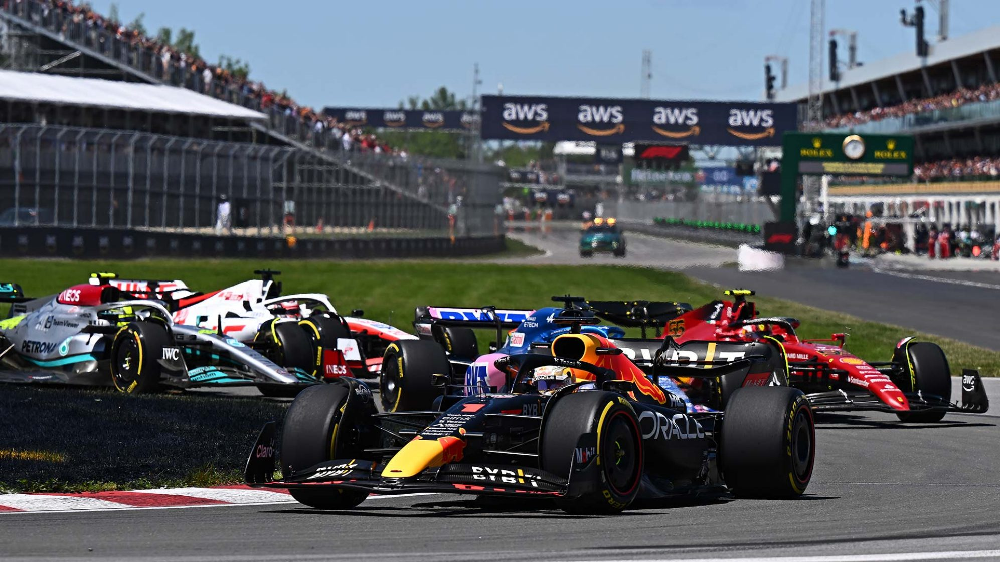

Résumé GP du Canada 2022
Rédigé par Clément Lazzarini, le 19/06/2022
Des qualifications piégeuses
Ce week-end canadien n'a pas été de tout repos pour les écuries de Formule 1. Surtout le samedi pour la séance de qualification, qui a dû se dérouler sous une pluie battante. Sergio Perez s'est piégé en début de Q2, et a fini dans les Tecpro. Mais la pluie en qualification crée toujours des surprises, avec cette fois-ci la 5ème et la 6ème place pour les Haas, et surtout la deuxième position pour le pilote espagnol, Fernando Alonso !
La remontée de Charles Leclerc
C'est donc avec une grille de départ peu habituelle que débute le Grand Prix le lendemain, sous le soleil cette fois-ci. Sergio Perez a été contraint d'abandonner très tôt dans la course suite à une panne moteur, certainement en lien avec son accident la veille. Charles Leclerc, parti dernier suite à une pénalité pour changement de moteur, a très vite entamé sa remontée au classement afin de ne pas trop perdre de points sur son rival au classement Max Verstappen. C'est mission réussie pour le pilote monégasque, en partie. Car il termine 5ème derrière son rival, son coéquipier et les deux Mercedes.
Un envol de Max Verstappen
Au final, on a assisté à un Grand Prix assez plaisant, malgré les très nombreux "petits trains" auxquels on a eu le droit. Les F1 2022 profitant moins du phénomène d'aspirations que les précédentes, les pilotes ont eu beaucoup de mal à réaliser des dépassements grâce au DRS. Georges Russell et Charles Leclerc ont eux multipliés les dépassements au virage 10. À noter le retour sur le podium du septuple champion du monde Lewis Hamilton, le nouveau top 5 pour son coéquipier et la rentrée dans les points de Guanyu Zhou et Lance Stroll ! C'est donc Max Verstappen qui l'emporte devant un Carlos Sainz qui paraissait impuissant. Le néerlandais accentue encore son écart au classement avec Charles leclerc.
Est-ce que quelqu'un arrivera à le rattraper ?